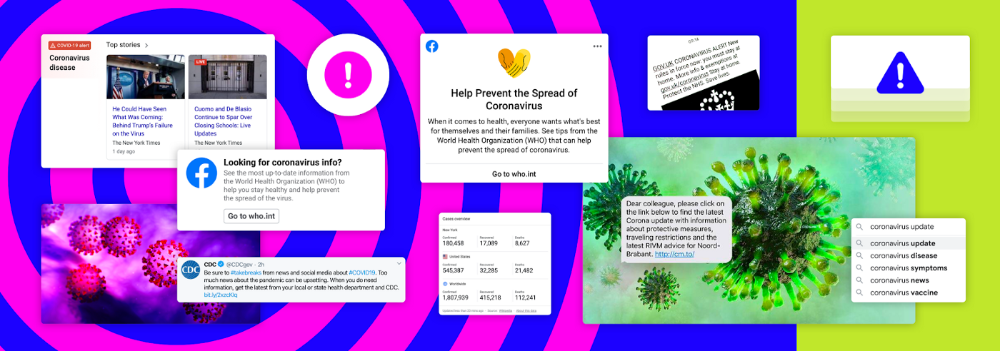

In recent years, the flood of information has become a normal situation. The days of morning paper and night news are long gone. Information updates have penetrated every second and every inch of our lives.
The flood of information is like the arrival of zombies—We have tens of email everyday and hudreds of news and app notifications.
Our brains are wounded unconsciously. Our body responds to overwhelming stimuli by releasing stress hormones, we keep receiving explosion information everyday,the reaction will continue, leading to long-term anxiety and stress.
The influx of information hasn't given our bodies and brains enough time to reset. We live in a world where information is advancing and exploding rapidly.

Brainstorming
Social information software is creating information all the time! Such an environment is simply overwhelming us.
We are highly anxious about information. We are always worried about "others know but I don't know". We force ourselves to read a lot of information every day.
But as we continue to receive this information, we are overwhelmed by a piece of information.I want to transform this situation into a VR Scenes, create a atmosphere where people can more directly receive the anxiety caused by
information explosion.
prototype
This is the video effect that I want to make for vr scenes and we can see that when all the information comes to you, you will fell very anxious.
To-do list
Actually, I don't have any AR experience, so I want to learn some ar technique and help me to delveop my ideas.